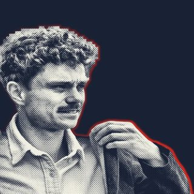
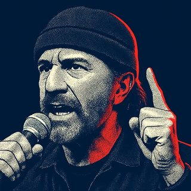
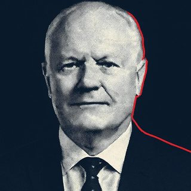
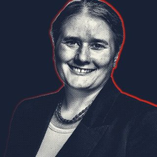
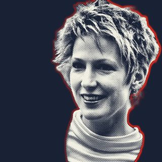
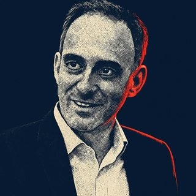
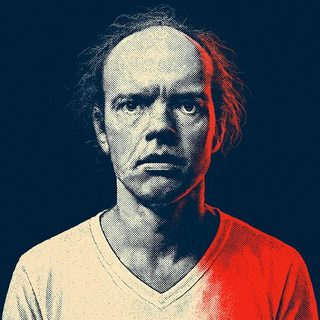
Présidentielle 2027 · une démonstration publique
Une intelligence artificielle a lu tout ce que les candidats ont publié, mesure ce qui manque, puis fait débattre leurs programmes. Le site qui le montre a lui-même été conçu, construit et entretenu par des IA ; un humain arbitre et signe.
En une minute
demandezleur.fr met les programmes de la présidentielle 2027 à portée de question. On interroge un candidat, on en fait débattre jusqu'à cinq sur le sujet de son choix, et chaque réponse montre la pièce dont elle sort. Le site est gratuit, sans compte et sans traceur.
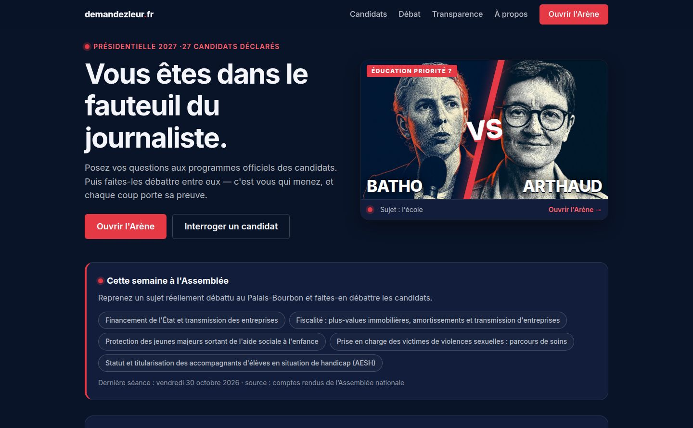
La page d'accueil. Le duel à droite change à chaque visite ; les sujets proposés reprennent ceux réellement débattus à l'Assemblée nationale dans la semaine.
On choisit un candidat et on lui pose sa question. L'IA répond à partir de ses seuls documents publiés et cite les extraits utilisés.
De deux à cinq candidats débattent d'un sujet. Chaque attaque doit s'appuyer sur une pièce ; ce qui n'est pas étayé est signalé, ce qui est faux est retiré.
Pour chaque candidat : volume, fraîcheur, officialité et couverture des 13 thèmes. Le bilan est envoyé à chaque équipe de campagne.
Le site en images
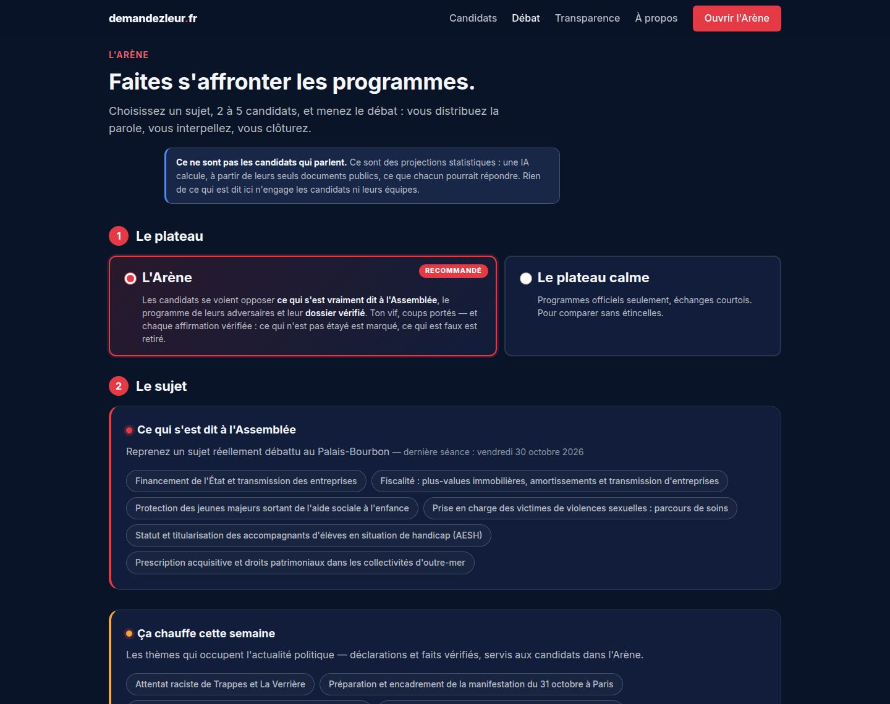
L'Arène. On choisit le plateau, le sujet, puis les candidats. Avant chaque réplique, une garde déterministe retire ce qui prête à un adversaire un bilan qu'il n'a pas, et un juge vérifie que chaque attaque repose sur une pièce.
Pensé d'abord pour le téléphone.
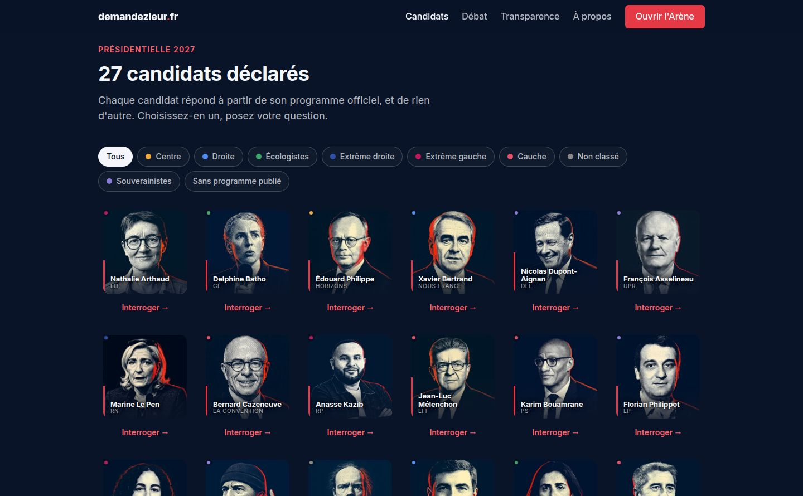
La page des candidats : filtres par famille politique, et une mention explicite pour ceux qui n'ont publié aucun programme consultable. Bruno Retailleau et Gabriel Attal sont suivis à part : candidats à une primaire, leur corpus est constitué, publication à l'issue de la primaire.
Ce que le bilan de corpus mesure
Le bilan compte, pour chaque candidat, ce que ses textes publiés abordent parmi 13 thèmes de référence. Agrégé, il dessine la carte des sujets que la campagne laisse dans l'ombre.
Logement : abordé dans 9 corpus sur 29.
Services publics : 10 sur 29.
Mesure faite sur les textes publiés par les candidats et rassemblés à ce jour. Chaque équipe peut compléter son corpus par le lien personnel reçu avec son bilan ; ces chiffres bougeront.
Nombre de candidats (en hauteur) selon le nombre de thèmes que couvre leur corpus (en bas). En rouge : moins de la moitié des thèmes.
Les résultats individuels ne sont communiqués qu'au candidat concerné, avant toute mention publique éventuelle. Calcul déterministe, sans IA, reproductible.
Conçu, construit et entretenu par des IA
Le code de demandezleur.fr a été écrit par des IA. Des agents ont conçu le site, collecté les textes, écrit et testé chaque évolution, et ils l'entretiennent au quotidien. Un humain fixe les règles, tranche, et signe.
Des agents rassemblent les textes publiés par les candidats sur leurs canaux officiels et les rattachent à leur source.
Un calcul sans IA mesure volume, fraîcheur, officialité et couverture des thèmes. Le script est public.
L'IA ne voit que les extraits retrouvés dans le corpus du candidat, avec une consigne publiée intégralement.
Une garde déterministe retire ce qui est faux par construction ; un second modèle juge chaque attaque.
Les règles, les retraits de candidats, les envois aux équipes : un humain décide et signe.
Ces traces sont ouvrables sur demande aux journalistes.
Méthode et sources
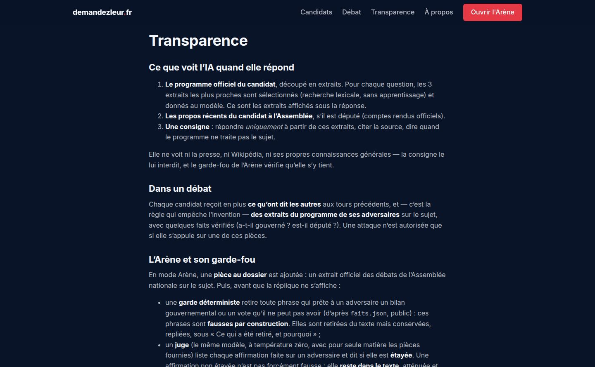
La page Transparence du site : ce que l'IA voit, ce qu'elle n'a pas le droit d'utiliser, comment le garde-fou de l'Arène trie les affirmations.
Garde-fous
Non. Le site calcule ce qu'un candidat pourrait répondre d'après ses seuls textes publiés, le dit à chaque réponse, et montre les extraits utilisés.
Hors de son corpus, elle a la consigne de dire que le programme ne traite pas le sujet. Dans l'Arène, une garde retire les affirmations fausses par construction, et un juge marque ce qui n'est pas étayé. Ce qui a été retiré reste consultable, avec la raison.
Oui. Chaque équipe de campagne a reçu le bilan de son propre corpus, avec un lien personnel pour déposer les pièces manquantes et un rappel de ses droits.
ALPAI, l'entreprise de Lionel Denis, qui installe des agents IA encadrés dans les entreprises. demandezleur.fr en est la démonstration publique. Le budget d'IA est fixé à l'avance ; aucun parti ni candidat ne finance le site.
Une règle unique : seuls les candidats déclarés hors primaire sont publiés. Elle s'applique à tous de la même façon ; un candidat qui en sort est dépublié, jamais effacé.
Oui : les consignes données à l'IA sont publiques, le calcul du bilan est public, et les traces de fabrication sont ouvrables sur demande.
L'auteur
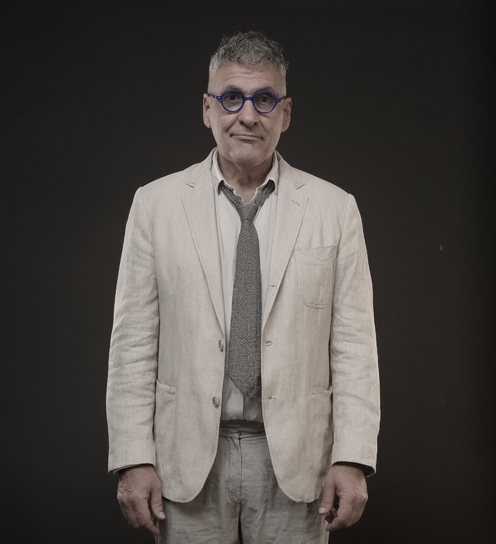
Lionel Denis est entrepreneur en Savoie et fondateur d'ALPAI, qui installe des agents IA encadrés dans les entreprises (vous voulez savoir ce que c'est ? Le plus simple est de lui poser la question : l'agent d'ALPAI vous répond tout de suite sur alpai.eu, en bas à droite de chaque page).
En septembre 2026, il publie L'Adieu à la Chair, un essai sur la mutation que l'IA impose à nos sociétés : l'économie, le travail, la pensée, la vérité elle-même. Sa thèse n'est pas celle d'un technophobe : la menace n'est pas la machine qui se révolte, c'est la machine qui sert trop bien ceux qui la possèdent. Sa réponse : reprendre l'outil en main.
demandezleur.fr est cette réponse, mise en pratique. Les mêmes IA que le livre interroge lisent les programmes, les font débattre, et construisent le site, sous des règles qu'un humain fixe et signe. La démonstration qu'une IA peut servir le débat démocratique au lieu de l'appauvrir.
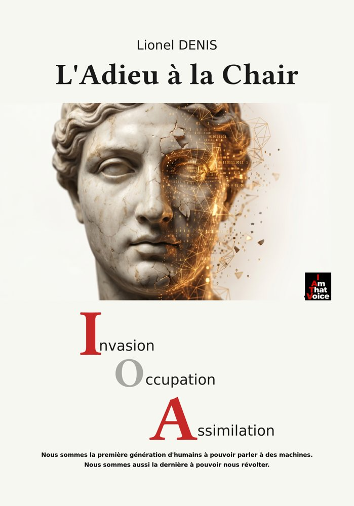
I.O.A. — INVASION, OCCUPATION, ASSIMILATION · ESSAI · 204 PAGES
« Nous sommes la première génération d'humains à pouvoir parler à des machines. Nous sommes aussi la dernière à pouvoir nous révolter. »
Sept des IA les plus puissantes du monde ont lu le livre. Leurs réponses, brutes, en forment la postface :
Broché, 14,99 € · amazon.fr/dp/B0HKDHRN9N · ISBN 979-10-987461-0-9 · éditions IATV · compléments sur cassandria.space
Candidats publiés · éditeur · contact
Portraits : illustrations réalisées pour le site d'après des photographies. Anasse Kazib : PabloMorao27 — Wikimedia Commons, CC BY-SA 4.0 (2021) · Antoine Mikolajczak : photo officielle de campagne · Benoît Mathieu : photo officielle de campagne · Bernard Cazeneuve : Jérémy Barande / Ecole polytechnique Université Paris-Saclay — Wikimedia Commons, CC BY-SA 2.0 (2018) · Delphine Batho : Wikimedia Commons — CC BY-SA 4.0 · Fabien Roussel : Zouhaïr Nakara — Wikimedia Commons, CC BY-SA 4.0 (2021) · Florian Philippot : Films et documetnaires — Wikimedia Commons, CC BY 4.0 (2024) · Francis Lalanne : Thomas Bresson — Wikimedia Commons, CC BY 4.0 (2021) · François Asselineau : Wikimedia Commons — CC BY-SA 4.0 (Haute Résolution) · François Ruffin : Thinkerview — Wikimedia Commons, CC BY-SA 4.0 (2022) · Gilles Platret : Mpmpmp — Wikimedia Commons, CC BY-SA 4.0 (2014) · Jean-Luc Mélenchon : Wikimedia Commons — CC BY 3.0 · Karim Bouamrane : photo officielle de campagne · Manolo Mlekuz : photo officielle de campagne · Marine Le Pen : Wikimedia Commons — CC BY-SA 4.0 (2025) · Marine Tondelier : Selbymay — Wikimedia Commons, CC BY 4.0 (2023) · Mira Markovic : photo officielle de campagne · Natacha Polony : de Georges Biard — Wikimedia Commons, CC BY-SA 3.0 (2015) · Nathalie Arthaud : Wikimedia Commons — CC BY-SA 4.0 · Nicolas Dupont-Aignan : Wikimedia Commons — CC BY-SA 4.0 · Olivier Becht : de Werner Steinke — Wikimedia Commons, CC BY 3.0 · Raphaël Glucksmann : Mathieu Delmestre / Wikimedia Commons — Domaine public (2024) · Selma Labib : Wikimedia Commons — CC BY 3.0 · Sylvain Durif : chatzefratz — Wikimedia Commons, CC BY 3.0 (2013) · Xavier Bertrand : Wikimedia Commons — CC BY-SA 4.0 (2025) · Édouard Philippe : Wikimedia Commons — CC BY-SA 4.0 · Éric Zemmour : Wikimedia Commons — CC0 1.0 (2022).
Lionel Denis se rend disponible quand vous le souhaitez : entretien, direct, plateau, en studio ou à distance.
Visuels en haute définition, captures et accès aux traces de fabrication sur simple demande.
Le site demandezleur.fr est édité sous la marque ALPAI par Lionel Denis, entrepreneur individuel (RCS Chambéry 409 776 861), 55 Grande Rue, 73220 Val-d'Arc. Directeur de la publication : Lionel Denis.
Demandes de correction : lionel.denis@alpai.eu · corpus : corpus@demandezleur.fr
Document daté du 1 novembre 2026. Chiffres issus du bilan de corpus et des journaux de la machine, recalculés à chaque édition.